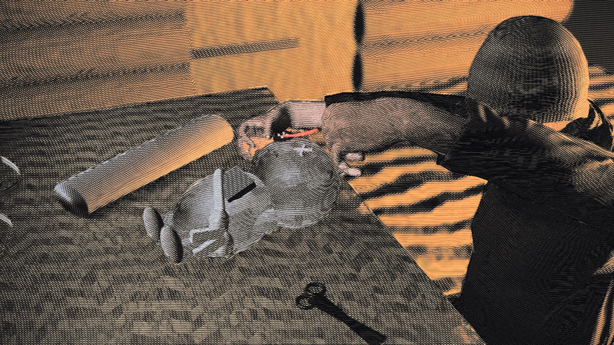
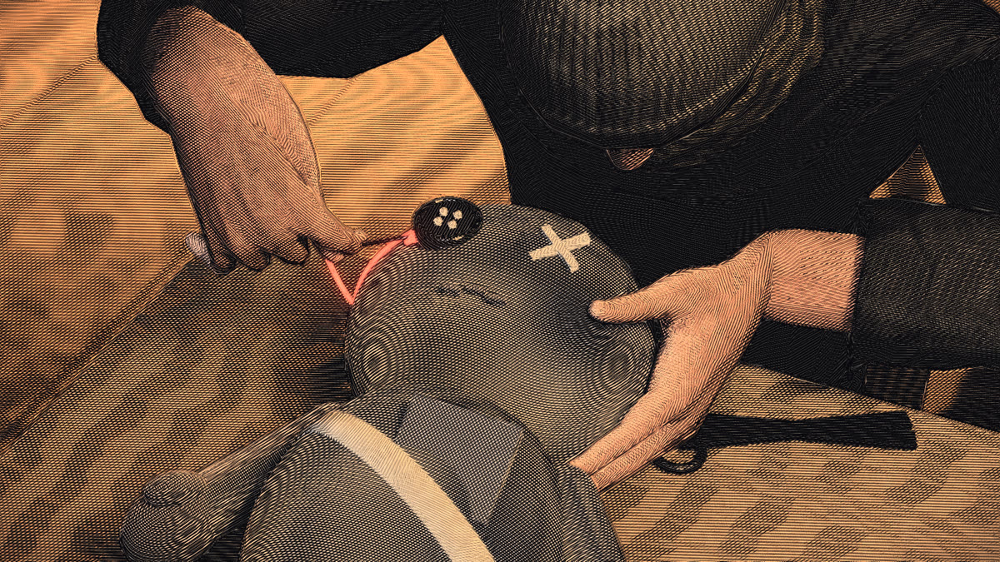
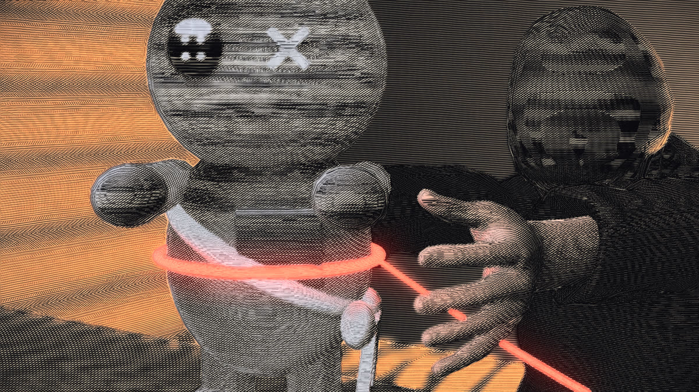
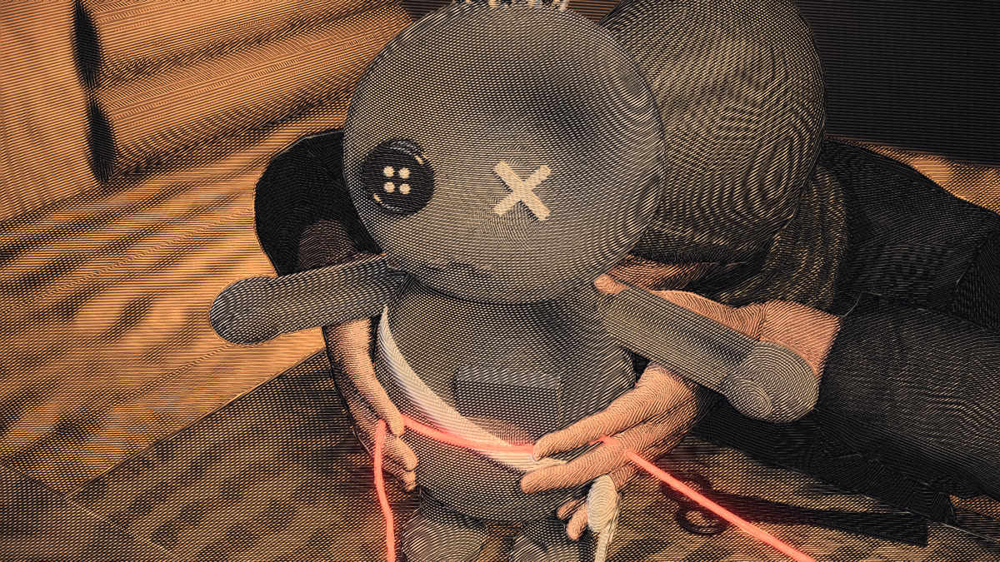
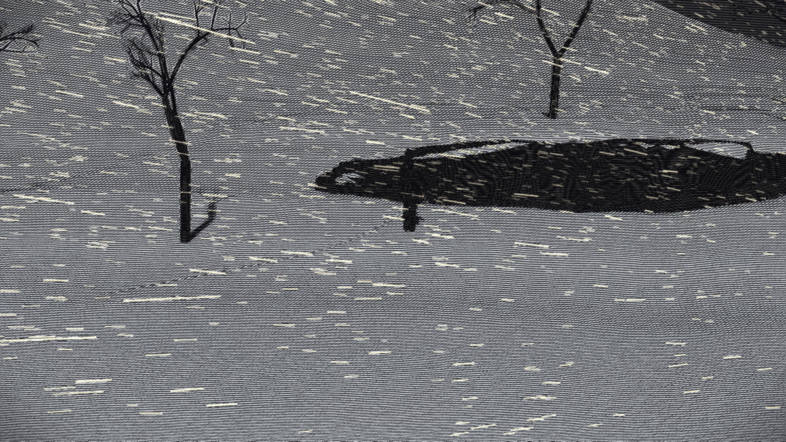
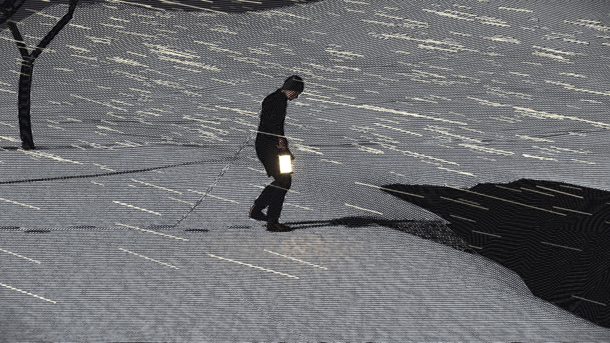
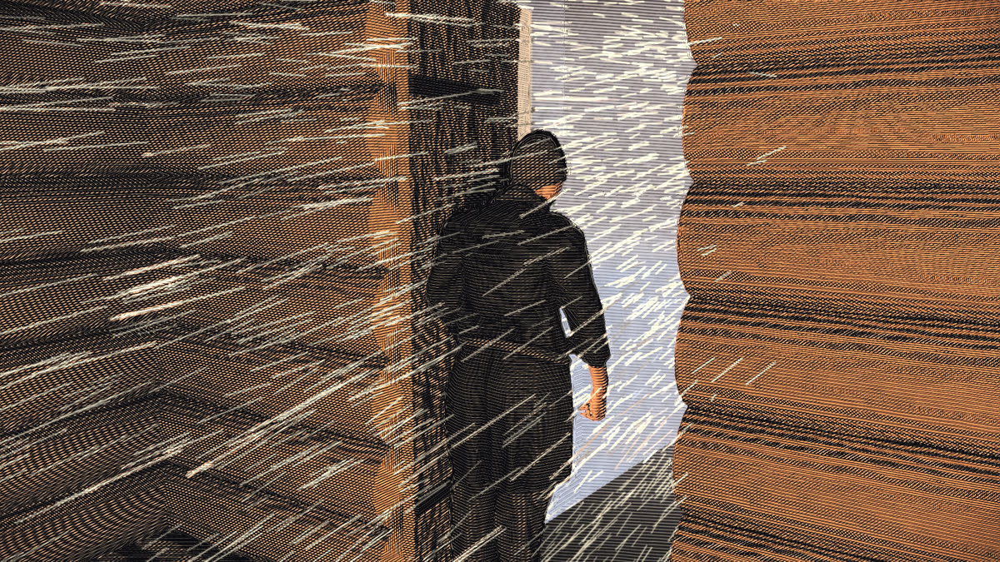
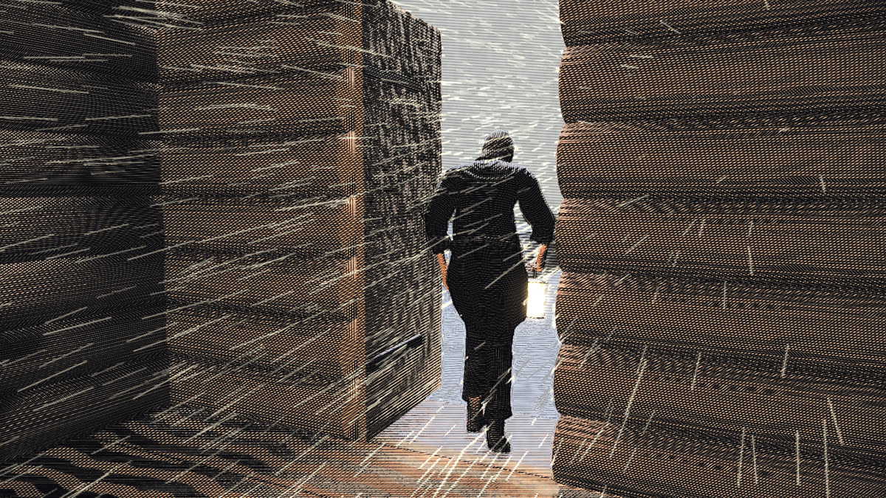
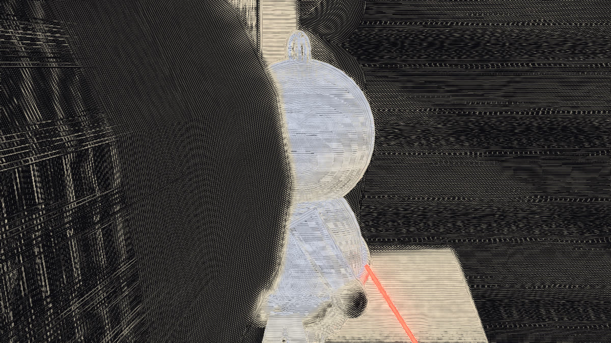
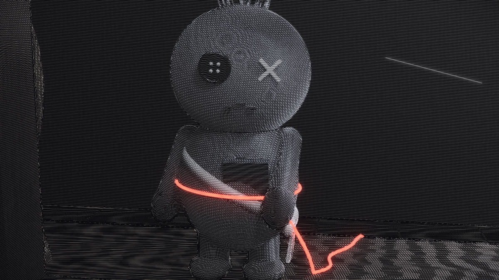

her hands on the woolher boots in the snow
The opening film has been staged again, 85 seconds in all. She knits stitch by stitch, sews the eye on, ties the thread, carries the doll to the sill and sets it down. Her hands rest on what they hold, she walks on her own legs, every camera moves in a straight line at one speed, and each sound is placed by the same numbers that move the picture.
The whole film, with sound
make more detailed moves in the knitting scene


BeforeAfterDrag the thread to compare
make sure the hands are touching the doll, not inside, not hovering, but touching, and the dolls moves together with hands


BeforeAfterDrag the thread to compare
Her skin is now fitted to the wool. The palm is brought up until it meets the surface, then every finger closes joint by joint until its own skin does, and the thumb last. After that the hand is fixed to the doll, so they move as one thing. In the old film one hand floated 5 cm away and the other was sunk 6 cm into the doll.
before, left handbefore, right handnow, both hands
Millimetres between skin and doll while she lifts it; below zero is inside
| What she holds | Frames | Skin to surface, the whole hold |
|---|---|---|
| Knitting needles | 156 | −0.6 mm |
| The doll’s head while sewing | 210 | −0.8 mm |
| The sewing needle, whenever it is pinched | – | −1.3 to +0.1 mm |
| The thread she pulls tight | 93 | −0.1 to +0.1 mm |
| The doll, lifted from the table | 73 | −0.8 to −0.4 mm |
| The doll, set on the sill | 126 | −0.8 to −0.4 mm |
| Her hand on its head | 29 | −0.8 to −0.5 mm |
| The lantern’s handle | 416 | −0.7 mm |
Nearest point of the hand to what it holds; the wool gives up to 0.8 mm
when the knitter exits the house she should be actually walking, not just flowing


BeforeAfterDrag the thread to compare


BeforeAfterDrag the thread to compare
there is also some flickeing seen outside when she exits. Fix it.
There were five causes, and each has been dealt with.
| Shot | Flicker before | Now |
|---|---|---|
| Her way to the pit | 28.9 | 13.5 |
| The door | 20.9 | 13.7 |
| The opening storm | 38.3 | 23.5 |
| The window from outside | 34.5 | 20.4 |
| Lifting the doll | 22.8 | 10.7 |
| The doll alone | 18.2 | 11.6 |
| The waking | 16.3 | 4.3 |
Average back-and-forth change per pixel (0 to 255), falling snow included
By the pit, measured only where no flakes fall, flicker went from 64 to 9 at full size.
in every shot the camera movement should not have an ease-in-out smoothing, it should be just linear
All eleven moves run in a straight line at one speed from the first frame to the last, and the hand-held drift is gone. Within any shot, the fastest and slowest frames differ by at most 0.003 mm. This covers the opening film only.
All the sounds should play in perfect sync with the movements. Also the magic sounds when the doll starts to move it super cringe, replace it pls


BeforeAfterDrag the thread to compare
app/assets/cine/intro.mp4scripts/cine/shots_intro.pyscripts/cine/act.py, checked by touch.pyscripts/cine/foley.py, checked by synccheck.pyscripts/cine/render_intro.sh, stills with pv.sh